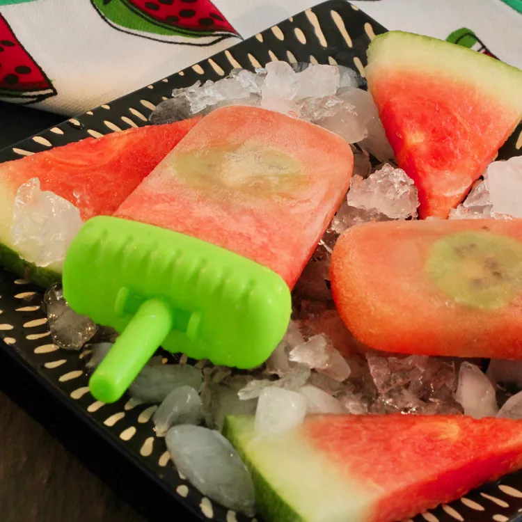

IceCream

Boozy Watermelon-Kiwi Ice Pops
Ingredients
- ¼ cup tequila
- 1 large orange, zested and juiced
- 2 tablespoons white sugar
- 1 tablespoon lime juice
- 5 cups diced seedless watermelon
- 2 kiwis, peeled and sliced
Directions
- Combine tequila, orange zest, orange juice, sugar, and lime juice in a shallow 9x13-inch dish. Stir in diced watermelon and refrigerate for 2 hours, stirring occasionally.
- Remove watermelon mixture from the refrigerator and pour into a blender or food processor; process until pureed. Pour into ice pop molds, drop in a kiwi slice, and freeze until firm, 3 hours or overnight.
Back to Home